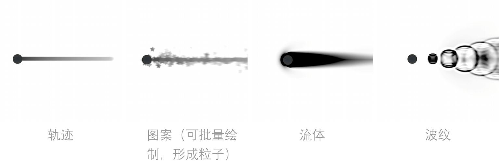

Any Trail
在玩家脚下创建任何轨迹并生成RT
点击下载游乐场
(*^_^*)
[WSAD移动, 空格画轨迹, 1234 开关不同画笔]
介绍
- AnyTrail 可以让角色在脚下的RT上绘制轨迹，并计算流体和波纹
- 所有功能都在 Compute shader 中完成
- 绘制结果可用于渲染轨迹/特效
功能
当前支持四类轨迹，但系统通过合理的数据结构支持扩展为绘制任何程序化图像（如树枝、分形、噪波等）- 2D 流体:使用欧拉法解 2D NS 方程, 纹理像素作为流体元，可以用来绘制可交互液体/气体效果
- 表面波纹:近似模拟波动方程, 可以用来模拟玩家与浅水表面的交互
- 轨迹: 持续的绘制圆圈, 可以用来绘制连续的轨迹（用在沙地、雪地等情景）
- 图案: 绘制任何形状的图案，可控制随机数量和位置以形成粒子效果。用来绘制任何形状的足迹用于影响地面着色

插件结构
插件主要有三部分组成：画笔脚本（绑定在角色上发送绘画指令），画布（接受绘画指令并处理后发送给计算器），计算器（根据接受到的指令绘制RT）
另外，画布还实时判断角色和画布的相对位置，以移动画布位置，保证画布始终在角色脚下。

使用案例


[WSAD移动, 空格画轨迹, 1234 开关不同画笔]